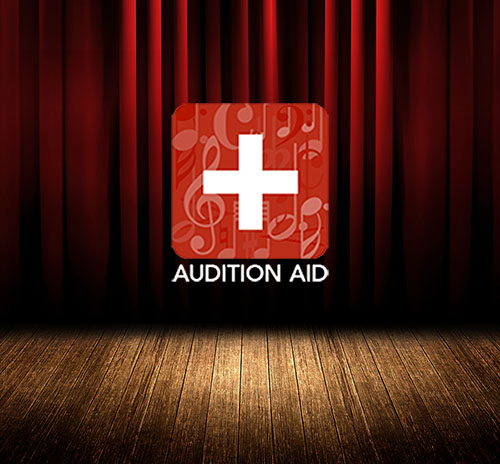

Audition Aid
Find your perfect piece!
What This Web App is
This web app was created in order to assist musical auditioners with finding fitting songs for the parts they're trying out with. The reason we made it is that if you search for audition songs online, all you'll get are tons of pages and yahoo answers suggesting the same songs over and over again that you hear at every audition. Our tool instead uses its data base to suggest songs more tailored to the show and part you are auditioning for. It compares the age, vocal range, and gender of the part to other musical songs to help give you a more extensive list to choose from. It's a much needed bridge between auditioners and the wealth of audition pieces, both classic and contemporary, that could land them their dream role.
Where the Web App Came from
Audition Aid came to be as our project for this year's Women in Computing Hackathon, or WiCHacks. It's a 24 hour hackathon for 14 year old women and up through graduate students. Technologies that we included were HTML/CSS for the initial front-end, along with Twitter Bootstrap and jQuery. Our backend was created using the Flask microframework to help communicate with our database, which was set up using SQLite. The rest of the backend was written in the Python scripting language. We also used the Spotify API in order to create play buttons of the songs in the search results.
Credit given to Maggie Hewitt, Paige Satterly, and Leslie Brown for their helpOur App
If you want to see our app in action, we've hosted it at Python Anywhere. Try it out!
